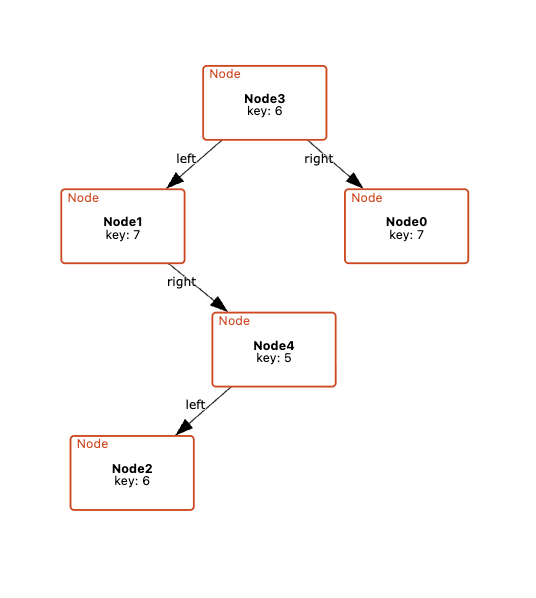
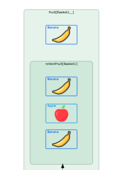
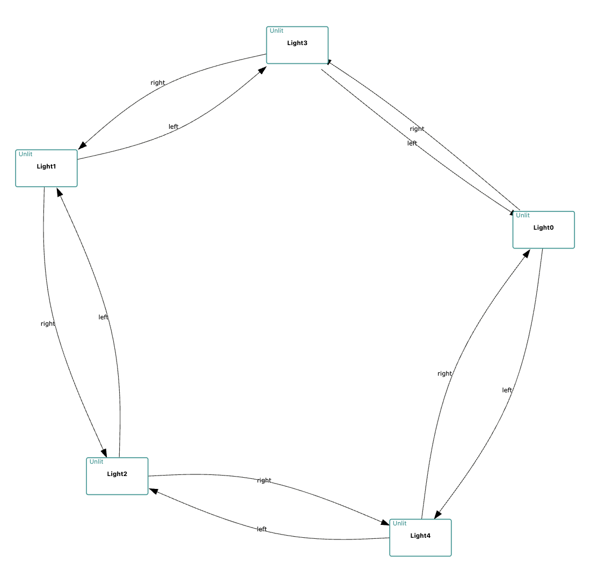
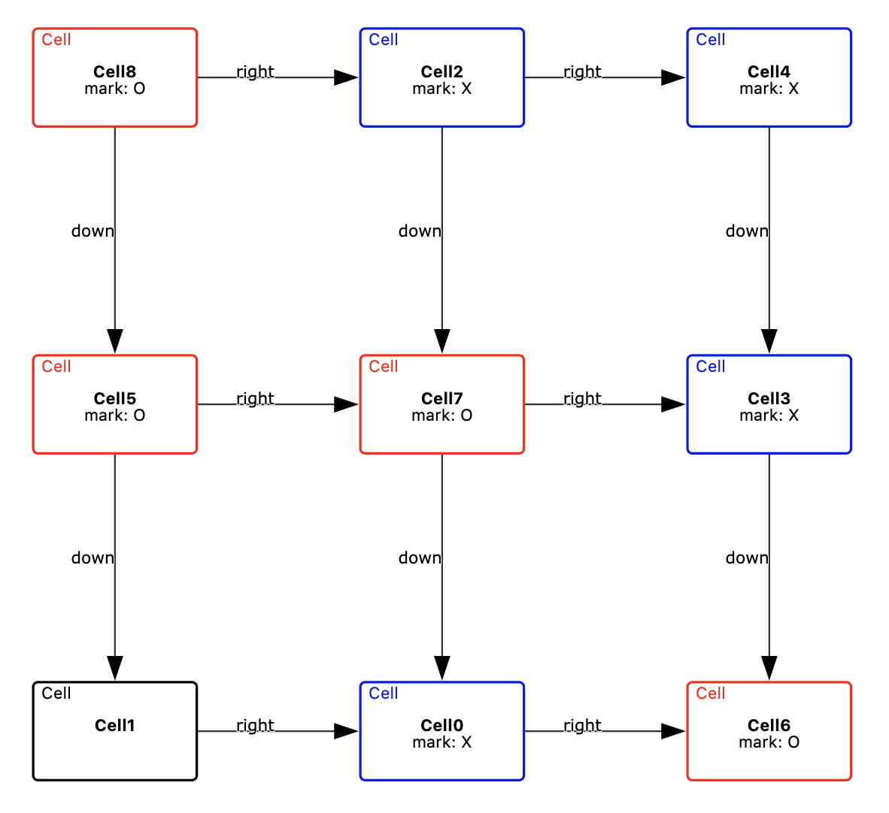

Examples
These example diagrams demonstrate key features of CnD. You can interact with each example directly in your browser using a client-side viewer (note: the Cope and Drag specification cannot be edited in this mode), or download the full example as a .zip file for use with Cope and Drag at the /import endpoint.
Binary Tree
Uses orientation constraints to ensure that a binary tree's children are appropriately laid out.
View Interactive Diagram Download Example

Fruit in Baskets
Uses grouping constraints to group a set of fruit by the baskets they are in, as well as group all rotten fruit in a basket together. Also uses icons to identify each fruit type.
View Interactive Diagram Download Example

Ring Lights
Uses cyclic constraints to arrange a ring of lights along the boundary of a regular shape.
View Interactive Diagram Download Example

Tic Tac Toe
Uses orientation constraints to arrange a tic tac toe board.
View Interactive Diagram Download Example
